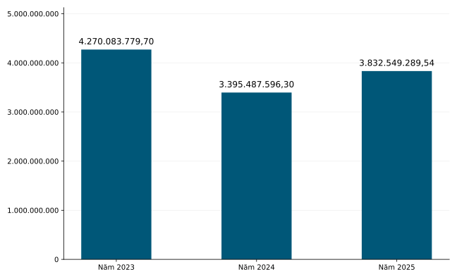
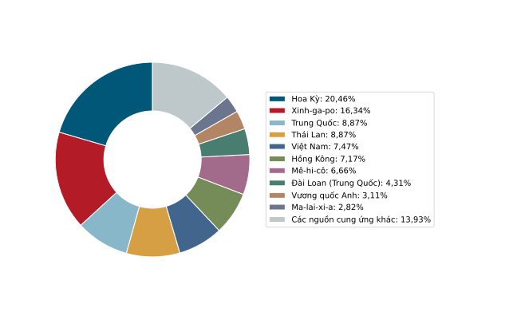
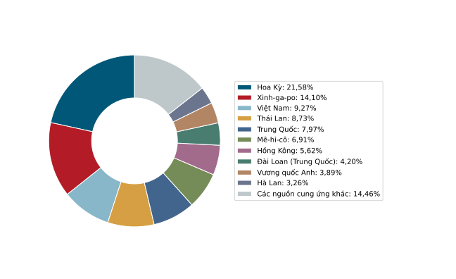
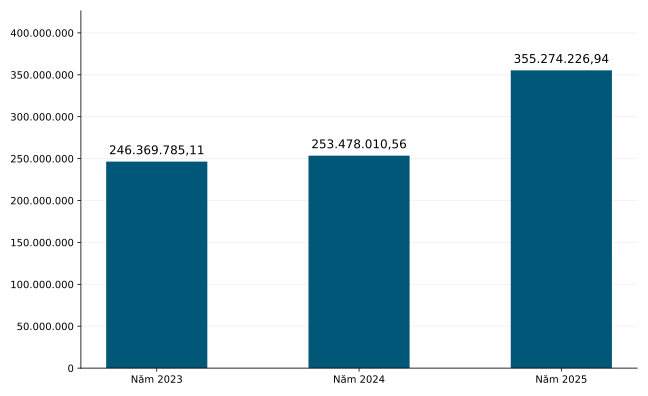
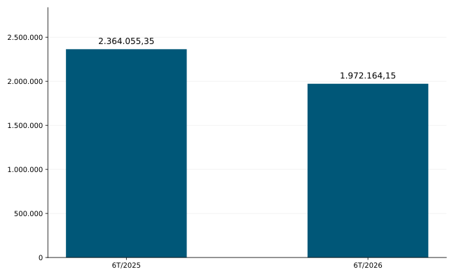

Cục Phòng vệ thương mại ban hành Bản câu hỏi điều tra trong vụ việc AD24
Ngày 27 tháng 7 năm 2026, Bộ Công Thương ban hành Quyết định số 1903/QĐ-BCT về việc điều tra áp dụng biện pháp chống bán phá giá (CBPG) đối với một số sản phẩm thanh thép dự ứng lực có xuất xứ từ Cộng hòa nhân dân Trung Hoa (mã vụ việc AD24).
Trong quá trình điều tra, ngày 31 tháng 7 năm 2026, Cục Phòng vệ thương mại (Cơ quan điều tra) ban hành Thông báo số 107/TB-PVTM về việc ban hành Bản câu hỏi chọn mẫu dành cho nhà sản xuất, xuất khẩu nước ngoài. Ngày 24 tháng 8 năm 2026, Cơ quan điều tra tiếp tục ban hành Thông báo số 122/TB-PVTM về việc lựa chọn mẫu điều tra.
Ngày 26 tháng 8 năm 2026, Cơ quan điều tra đã ban hành Bản câu hỏi điều tra dành cho các nhà sản xuất, xuất khẩu nước ngoài được lựa chọn. Thời hạn nộp bản trả lời là hết ngày 02 tháng 10 năm 2026 (theo giờ Hà Nội).
Cơ quan điều tra đề nghị các nhà sản xuất, xuất khẩu nước ngoài được lựa chọn hợp tác đầy đủ và cung cấp thông tin chính xác, đầy đủ, đúng thời hạn nhằm bảo đảm quyền và lợi ích hợp pháp trong quá trình điều tra. Trường hợp không trả lời đúng hạn hoặc cung cấp thông tin không đầy đủ, chính xác theo yêu cầu, Cơ quan điều tra có thể sử dụng thông tin sẵn có để đưa ra kết luận theo quy định tại Điều 75 Luật Quản lý ngoại thương.
Các thông tin, số liệu do các bên cung cấp và quyền tiếp cận thông tin vụ việc được thực hiện theo quy định về bảo mật thông tin trong pháp luật phòng vệ thương mại. Cách thức trả lời, hình thức và thời hạn nộp Bản câu hỏi được hướng dẫn cụ thể trong tài liệu gửi doanh nghiệp; các bên liên quan cần nghiên cứu kỹ hướng dẫn và thực hiện đúng quy định.
TIN TRONG NƯỚC
Thông báo tiếp nhận hồ sơ đề nghị miễn trừ áp dụng biện pháp phòng vệ thương mại tháng 9 năm 2026
Ngày 03 tháng 9 năm 2026, Cục Phòng vệ thương mại (PVTM) ban hành Thông báo về việc tiếp nhận hồ sơ đề nghị miễn trừ áp dụng biện pháp PVTM cho thời kỳ năm 2026, theo quy định tại Thông tư số 26/2025/TT-BCT ngày 15 tháng 5 năm 2025 của Bộ trưởng Bộ Công Thương.
Theo đó, các doanh nghiệp đáp ứng điều kiện miễn trừ áp dụng biện pháp PVTM trong các vụ việc cụ thể nêu tại Phụ lục kèm theo Thông báo được đề nghị nộp hồ sơ miễn trừ. Thành phần hồ sơ thực hiện theo quy định tại Điều 16 và Phụ lục II Thông tư số 26/2025/TT-BCT.
Đối với doanh nghiệp đã được cấp miễn trừ cho năm 2026 và sắp sử dụng hết khối lượng miễn trừ, doanh nghiệp có thể nộp Hồ sơ bổ sung miễn trừ theo khoản 4 Điều 17 Thông tư số 26/2025/TT-BCT tại bất kỳ thời điểm nào trong năm 2026.
Cục PVTM cũng lưu ý, Thông báo tiếp nhận hồ sơ đề nghị miễn trừ áp dụng biện pháp PVTM cho thời kỳ năm 2027 sẽ được ban hành vào ngày làm việc đầu tiên của tháng 10 năm 2026, theo quy định tại khoản 1 Điều 17 Thông tư số 26/2025/TT-BCT.
Doanh nghiệp gửi Hồ sơ đề nghị miễn trừ cho thời kỳ năm 2026 trong thời hạn quy định qua Cổng Dịch vụ công trực tuyến của Bộ Công Thương https://dichvucong.moit.gov.vn hoặc nộp trực tiếp/qua đường bưu điện về: Cục Phòng vệ thương mại – Bộ Công Thương
Địa chỉ: 54 Hai Bà Trưng, phường Cửa Nam, Hà Nội, Việt Nam
Điện thoại: (+84-24) 7303 7898.
TIN TRONG NƯỚC
Bộ Công Thương không gia hạn biện pháp chống bán phá giá đối với một số sản phẩm sorbitol từ Ấn Độ, In-đô-nê-xi-a và Trung Quốc
Ngày 03 tháng 9 năm 2026, Bộ Công Thương ban hành Quyết định số 2144/QĐ-BCT về kết quả rà soát cuối kỳ việc áp dụng biện pháp chống bán phá giá (CBPG) đối với một số sản phẩm sorbitol có xuất xứ từ Cộng hòa Ấn Độ, Cộng hòa In-đô-nê-xi-a và Cộng hòa nhân dân Trung Hoa (mã vụ việc ER01.AD14). Theo đó, Bộ trưởng Bộ Công Thương quyết định không gia hạn biện pháp CBPG đối với hàng hóa bị điều tra.
Bộ Công Thương bắt đầu tiến hành rà soát cuối kỳ từ tháng 11 năm 2025 theo quy định của pháp luật Việt Nam về phòng vệ thương mại. Quá trình rà soát được thực hiện theo Luật Quản lý ngoại thương, các quy định pháp luật có liên quan và Hiệp định chống bán phá giá của Tổ chức Thương mại thế giới (WTO).
Trong quá trình rà soát, Cơ quan điều tra xác định hồ sơ yêu cầu rà soát cuối kỳ của bên yêu cầu không đầy đủ và hợp lệ. Căn cứ điểm b khoản 7 Điều 62 Nghị định số 86/2025/NĐ-CP ngày 11 tháng 4 năm 2025 của Chính phủ quy định chi tiết một số điều của Luật Quản lý ngoại thương về các biện pháp phòng vệ thương mại, Bộ trưởng Bộ Công Thương quyết định không gia hạn việc áp dụng biện pháp CBPG đối với hàng hóa bị điều tra.
TIN NƯỚC NGOÀI
Mê-hi-cô khởi xướng điều tra chống bán phá giá đối với thép tấm nhập khẩu từ Nhật Bản
Ngày 2/9/2026, Mê-hi-cô khởi xướng điều tra chống bán phá giá đối với sản phẩm thép tấm có xuất xứ từ Nhật Bản. Vụ việc được Bộ Kinh tế Mê-hi-cô tiếp nhận trên cơ sở đơn yêu cầu của Grupo Acerero, trong đó doanh nghiệp này cáo buộc các sản phẩm thép tấm sản xuất tại Nhật Bản được nhập khẩu vào Mê-hi-cô với hành vi cạnh tranh không công bằng, cụ thể là bán phá giá, gây thiệt hại đáng kể cho ngành sản xuất trong nước.
Theo Quyết định khởi xướng, cuộc điều tra chống bán phá giá áp dụng đối với thép tấm có xuất xứ từ Nhật Bản, không phụ thuộc vào quốc gia xuất khẩu. Theo đó, các sản phẩm có xuất xứ Nhật Bản thuộc phạm vi điều tra ngay cả khi được xuất khẩu sang Mê-hi-cô thông qua một quốc gia hoặc vùng lãnh thổ khác. Thời kỳ điều tra bán phá giá được xác định trong năm 2025, trong khi thời kỳ điều tra thiệt hại kéo dài từ tháng 1/2023 đến tháng 12/2025.
Trên cơ sở kết quả điều tra, Bộ Kinh tế Mê-hi-cô có thể xem xét áp dụng thuế chống bán phá giá chính thức đối với các sản phẩm thuộc phạm vi điều tra nếu xác định các điều kiện áp dụng biện pháp theo quy định. Các nhà sản xuất, nhà xuất khẩu và các tổ chức, cá nhân có quyền lợi liên quan đến vụ việc có 23 ngày làm việc để xác lập tư cách tham gia vụ việc và nộp các bản trả lời, lập luận và chứng cứ liên quan cho cơ quan điều tra.
Tổng hợp từ reuters.com
TIN NƯỚC NGOÀI
Úc chấm dứt điều tra chống trợ cấp và chống bán phá giá đối với thép dẹt cán phẳng nhập khẩu từ một số doanh nghiệp sản xuất của Trung Quốc và Hàn Quốc
Ngày 26/8/2026, Cơ quan Chống bán phá giá Úc (ADC) ban hành Quyết định số 2026/102, theo đó chấm dứt điều tra chống trợ cấp đối với hai nhà sản xuất thép dẹt cán phẳng của Trung Quốc là Baosteel Zhanjiang Iron and Steel Co., Ltd. và Hunan Valin Lianyuan Iron and Steel Co., Ltd., do xác định mức trợ cấp trong thời kỳ điều tra ở mức không đáng kể.
Trong cùng quyết định, ADC chấm dứt điều tra chống bán phá giá đối với nhà xuất khẩu Hàn Quốc POSCO sau khi xác định doanh nghiệp này không có hành vi bán phá giá. Vụ việc liên quan đến các sản phẩm thép thuộc các mã HS: 7208.40.00.39, 7208.51.00.40, 7208.52.00.41, 7208.90.00.30, 7225.40.00.22 và 7225.40.00.24.
Đối với các sản phẩm còn lại có xuất xứ từ Trung Quốc, ADC tiếp tục điều tra chống bán phá giá và chống trợ cấp. Đồng thời, vẫn tiếp tục điều tra chống bán phá giá đối với sản phẩm có xuất xứ từ Hàn Quốc.
Tổng hợp từ yieh.com
TIN NƯỚC NGOÀI
Hiệp định thương mại tự do U-crai-na - Thổ Nhĩ Kỳ không ảnh hưởng đến thuế chống bán phá giá đối với rau quả trồng trong nhà kính
Hiệp định thương mại tự do (FTA) giữa U-crai-na và Thổ Nhĩ Kỳ sẽ xóa bỏ mức thuế nhập khẩu thông thường 10% đối với dưa chuột và cà chua tươi, nhưng không làm thay đổi đến thuế chống bán phá giá đang áp dụng đối với hàng hóa có xuất xứ từ Thổ Nhĩ Kỳ. Theo bà Angela Makhinova, luật sư hàng đầu của U-crai-na trong lĩnh vực thương mại quốc tế và là thành viên hợp danh của Công ty Sayenko Kharenko, các biện pháp chống bán phá giá hiện hành sẽ tiếp tục được duy trì sau khi FTA có hiệu lực.
Tháng 7/2025, U-crai-na áp dụng thuế chống bán phá giá ở mức 20,1–26,9% trong thời hạn 5 năm đối với dưa chuột và cà chua tươi nhập khẩu từ Thổ Nhĩ Kỳ. Kết quả điều tra xác định các nhà cung cấp Thổ Nhĩ Kỳ đã bán sản phẩm tại thị trường U-crai-na với giá bán phá giá, trong khi ngành sản xuất của U-crai-na chịu tác động thể hiện qua sụt giảm doanh số, giảm sản lượng và tỷ suất lợi nhuận âm.
Các biện pháp chống bán phá giá không làm chấm dứt hoạt động nhập khẩu dưa chuột và cà chua tươi từ Thổ Nhĩ Kỳ, nhưng làm tăng chi phí nhập khẩu và góp phần cải thiện điều kiện cạnh tranh cho các nhà sản xuất rau quả trồng trong nhà kính của U-crai-na. Trong quý I/2026, giá nhập khẩu dưa chuột từ Thổ Nhĩ Kỳ vào U-crai-na bình quân khoảng 1.100 EUR/tấn, thấp hơn mức 1.500 EUR/tấn tại thị trường EU và 2.200 EUR/tấn tại Đức. Đối với cà chua, giá nhập khẩu từ Thổ Nhĩ Kỳ khoảng 1.000 EUR/tấn, tương đương khoảng một nửa mức giá xuất khẩu sang Ru-ma-ni.
Theo FTA, mức thuế nhập khẩu thông thường 10% được xóa bỏ, trong khi các nhà nhập khẩu vẫn phải nộp thuế chống bán phá giá và thuế giá trị gia tăng (VAT). Việc xóa bỏ thuế nhập khẩu thông thường có thể tạo điều kiện để các nhà cung cấp Thổ Nhĩ Kỳ giảm giá bán tại thị trường U-crai-na, qua đó làm gia tăng sức ép cạnh tranh đối với các nhà sản xuất trong nước.
FTA không tạo cơ sở tự động để rà soát, đình chỉ hoặc hủy bỏ các biện pháp chống bán phá giá đang áp dụng. Theo pháp luật U-crai-na và các quy định của Tổ chức Thương mại Thế giới (WTO), cơ quan có thẩm quyền có thể tiến hành rà soát giữa kỳ sau một năm kể từ khi biện pháp chống bán phá giá được áp dụng. Các nhà sản xuất và nhà xuất khẩu nước ngoài có thể đề nghị tiến hành rà soát; Trên cơ sở kết quả rà soát, mức thuế chống bán phá giá có thể được giảm, giữ nguyên, tăng hoặc hủy bỏ. Trong một số trường hợp đáp ứng điều kiện theo quy định, biện pháp chống bán phá giá cũng có thể được đình chỉ trong thời gian từ 9 đến 12 tháng.
Bên cạnh đó, cơ chế tự vệ song phương có thể được áp dụng nếu lượng hàng hóa nhập khẩu tăng mạnh và gây thiệt hại nghiêm trọng hoặc đe dọa gây thiệt hại nghiêm trọng cho ngành sản xuất của U-crai-na. Tuy nhiên, việc áp dụng biện pháp này trên thực tế sẽ tương đương với việc khôi phục mức thuế nhập khẩu thông thường 10% đối với dưa chuột và cà chua, thấp hơn mức thuế chống bán phá giá hiện hành.
Tác động của FTA không chỉ giới hạn ở nhóm rau quả trồng trong nhà kính. Trong năm 2025, U-crai-na nhập khẩu từ Thổ Nhĩ Kỳ 81,7 triệu USD cà chua tươi, 33,3 triệu USD dưa chuột, 23,7 triệu USD các loại rau tươi khác và 30,7 triệu USD nho.
Tổng hợp từ hortidaily.com
TIN NƯỚC NGOÀI
Hàn Quốc áp dụng thuế chống bán phá giá đối với butyl acrylate nhập khẩu từ Trung Quốc
Ngày 1 tháng 9 năm 2026, Bộ Tài chính và Kinh tế Hàn Quốc thông báo quyết định áp dụng thuế chống bán phá giá đối với sản phẩm butyl acrylate nhập khẩu từ Trung Quốc trong thời hạn 5 năm, kể từ ngày 28 tháng 9 năm 2026.
Quyết định được ban hành sau khi Ủy ban Thương mại Hàn Quốc (KTC) thuộc Bộ Thương mại, Công nghiệp và Năng lượng tiếp nhận đơn yêu cầu điều tra chống bán phá giá của LG Chem và tiến hành điều tra từ tháng 9 năm 2025. Kết quả điều tra xác nhận sản phẩm butyl acrylate của Trung Quốc được bán phá giá và gây thiệt hại đáng kể cho ngành sản xuất trong nước.
Theo đó, Hàn Quốc sẽ áp dụng mức thuế chống bán phá giá từ 8,32% đến 19,17% đối với butyl acrylate nhập khẩu từ Trung Quốc trong thời hạn 5 năm. Trước đó, từ tháng 4 năm 2026, Hàn Quốc đã áp dụng mức thuế chống bán phá giá tạm thời từ 9,53% đến 19,17% nhằm ngăn ngừa thiệt hại tiếp diễn đối với ngành sản xuất trong nước trong thời gian điều tra.
Butyl acrylate là nguyên liệu được sử dụng trong sản xuất chất kết dính và nhựa đặc chủng. Năm 2024, quy mô thị trường butyl acrylate tại Hàn Quốc đạt khoảng 100 tỷ won (tương đương 73 triệu USD), trong đó sản phẩm có xuất xứ từ Trung Quốc chiếm khoảng 47% thị phần.
Bộ Tài chính và Kinh tế Hàn Quốc cho biết việc áp dụng biện pháp nhằm giảm thiểu thiệt hại đối với ngành sản xuất trong nước do hàng nhập khẩu giá thấp bị cáo buộc bán phá giá gây ra, đồng thời khắc phục những tác động của việc định giá không công bằng trên thị trường.
Tổng hợp từ Business Korea
TIN NƯỚC NGOÀI
Pa-ki-xtan áp dụng thuế chống bán phá giá đối với sợi polyester DTY nhập khẩu từ Trung Quốc
Ủy ban Thuế quan Quốc gia Pa-ki-xtan (NTC) quyết định tiếp tục áp dụng thuế chống bán phá giá (CBPG) đối với sản phẩm sợi polyester kéo giãn định hình (Drawn Textured Yarn – DTY) có xuất xứ hoặc nhập khẩu từ Trung Quốc trong thời hạn 5 năm, sau khi tiến hành xem xét lại vụ việc theo phán quyết của Tòa Phúc thẩm về chống bán phá giá.
Trước đó, NTC đã tiến hành điều tra và kết luận sản phẩm DTY nhập khẩu từ Trung Quốc được bán phá giá, gây thiệt hại đáng kể cho ngành sản xuất DTY trong nước. Ngày 17 tháng 6 năm 2025, NTC ban hành kết luận cuối cùng và áp dụng thuế CBPG đối với sản phẩm từ ngày 15 tháng 11 năm 2024. Sau đó, các nhà nhập khẩu và xuất khẩu đã nộp đơn kháng cáo lên Tòa Phúc thẩm về chống bán phá giá.
Ngày 11 tháng 6 năm 2026, Tòa Phúc thẩm giữ nguyên kết luận của Ủy ban đối với các vấn đề do nhà nhập khẩu kháng cáo, đồng thời yêu cầu Ủy ban tiến hành xác định lại vụ việc đối với các nội dung trong kháng cáo của nhà xuất khẩu. Thực hiện phán quyết, NTC đã xem xét lại các vấn đề liên quan và đưa ra kết luận mới về hành vi bán phá giá, đồng thời quyết định tiếp tục áp dụng thuế CBPG đối với sản phẩm DTY thuộc mã PCT 5402.3300 và 5402.6200.
Theo quyết định mới, thuế CBPG được áp dụng trong giai đoạn từ 15 tháng 11 năm 2024 đến 14 tháng 11 năm 2029, với mức thuế từ 3,07% đến 19,32%, tùy theo nhà xuất khẩu. Cụ thể, các doanh nghiệp thuộc Tập đoàn Xinfengming chịu mức thuế 3,07%; Tập đoàn Shenghong 3,18%; Tập đoàn Hengyi 4,50%; và Tập đoàn Tongkun 4,57%. Đối với các nhà xuất khẩu riêng lẻ, Hangzhou Qingyun Holding Group Co., Ltd. chịu mức 7,65%, trong khi Jiaxing Longyin Textile Co., Ltd. chịu mức cao nhất 19,32%.
Đối với nhóm nhà xuất khẩu/nhà sản xuất nước ngoài, trong đó có Zhejiang Jia Bao New Fiber Group Co., Ltd., Zhejiang Jiabao Polyester Co., Ltd., Shaoxing Huaqing Polyester and Textile Co., Ltd. và Fujian Jinlun Fiber Shareholding Company Limited cùng một số doanh nghiệp khác, mức thuế được áp dụng là 4,69%. Các nhà xuất khẩu/nhà sản xuất Trung Quốc còn lại chịu mức thuế 19,32%.
NTC cho biết DTY chủ yếu được sử dụng làm nguyên liệu đầu vào để sản xuất vải dệt, hàng dệt kim và các sản phẩm dệt may khác. Tuy nhiên, theo quy định của Luật Thuế chống bán phá giá năm 2015, thuế CBPG không áp dụng đối với sản phẩm nhập khẩu được sử dụng làm nguyên liệu cho các sản phẩm chỉ dành cho xuất khẩu hoặc các dự án viện trợ không hoàn lại của nước ngoài, nếu thuộc các chương trình được miễn thuế hải quan theo quy định.
Tổng hợp từ Business Recorder
TIN NƯỚC NGOÀI
Hàn Quốc công bố kết luận sơ bộ điều tra chống bán phá giá đối với natri hydroxit dạng rắn nhập khẩu từ Trung Quốc và Đài Loan (Trung Quốc)
Ngày 20 tháng 8 năm 2026, Ủy ban Thương mại Hàn Quốc (KTC) ban hành kết luận sơ bộ trong vụ việc điều tra chống bán phá giá đối với sản phẩm natri hydroxit dạng rắn (xút rắn), xác định sản phẩm bị điều tra có xuất xứ từ Trung Quốc và Đài Loan (Trung Quốc) bị bán phá giá. KTC đã trình Bộ Kinh tế và Tài chính Hàn Quốc đề xuất áp dụng thuế chống bán phá giá; quyết định cuối cùng sẽ được cơ quan tài chính xem xét và ban hành.
Theo kết luận sơ bộ, mức thuế chống bán phá giá được đề xuất áp dụng khác nhau đối với các doanh nghiệp Trung Quốc. Cụ thể, Shandong Binhua Dongrui Chemical và các doanh nghiệp liên kết chịu mức 3,66%; Tianjin United Supply Chain chịu mức 19,93%; Skyey Impex chịu mức 22,21%; các nhà cung cấp khác từ Trung Quốc đại lục chịu mức thuế chung 17,58%. Đối với Formosa Plastics và các nhà cung cấp khác từ Đài Loan (Trung Quốc), mức thuế được đề xuất là 38,89%.
KTC hiện chưa công bố đầy đủ cơ sở và phương pháp tính toán chi tiết đối với từng mức thuế. Các thông tin liên quan sẽ được làm rõ khi hồ sơ điều tra và kết luận cuối cùng được công bố chính thức.
Vụ việc chỉ áp dụng đối với natri hydroxit dạng rắn (xút rắn), không bao gồm toàn bộ các sản phẩm xút. Xút rắn có ưu điểm thuận tiện trong bảo quản và phù hợp với vận chuyển đường biển đường dài, do đó là một trong những dạng sản phẩm xút chủ yếu được giao dịch trên thị trường quốc tế. Sản phẩm này được sử dụng làm nguyên liệu đầu vào trong nhiều ngành công nghiệp như sản xuất giấy, dệt may, chất tẩy rửa và xử lý nước.
Vụ việc bắt nguồn từ đơn yêu cầu điều tra chống bán phá giá do doanh nghiệp Hàn Quốc Youngjin Co., Ltd. nộp vào tháng 3 năm 2026. Trên cơ sở đơn yêu cầu, KTC đã chính thức khởi xướng điều tra, với phạm vi điều tra bao gồm các nhà cung cấp xút rắn từ Trung Quốc đại lục và Đài Loan (Trung Quốc).
Xút là một hóa chất cơ bản được sản xuất với quy mô lớn và có giá trị gia tăng tương đối thấp. Ngành công nghiệp clo-kiềm của Hàn Quốc có nền tảng phát triển, trong đó LG Chem và Lotte Chemical đều đã đầu tư vào sản xuất xút và các ngành công nghiệp hỗ trợ liên quan. Trong bối cảnh công suất sản xuất clo-kiềm trong nước tiếp tục được mở rộng, nguồn cung trong nước dồi dào, thị trường Hàn Quốc và Nhật Bản trở thành những điểm đến xuất khẩu quan trọng của các nhà sản xuất trong khu vực. Sự cạnh tranh ngày càng gia tăng giữa nguồn cung mở rộng từ Trung Quốc và ngành công nghiệp clo-kiềm trong nước Hàn Quốc được xem là một trong những yếu tố dẫn đến việc tiến hành điều tra phòng vệ thương mại lần này.
Đối với mức thuế được đề xuất tương đối cao, Formosa Plastics cho biết lượng xút rắn xuất khẩu sang Hàn Quốc của doanh nghiệp ở mức thấp và thị trường Hàn Quốc chỉ chiếm tỷ trọng nhỏ trong tổng hoạt động kinh doanh. Do đó, doanh nghiệp đánh giá tác động thực tế của biện pháp chống bán phá giá nếu được áp dụng sẽ ở mức hạn chế.
Hiện tại, đây mới là kết luận sơ bộ và thuế chống bán phá giá chưa được chính thức áp dụng. Bộ Kinh tế và Tài chính Hàn Quốc sẽ tiếp tục xem xét toàn bộ hồ sơ, tài liệu điều tra để đưa ra quyết định cuối cùng và mức thuế có thể được điều chỉnh. Các doanh nghiệp xuất khẩu liên quan cần tiếp tục theo dõi sát diễn biến vụ việc, đồng thời chủ động đánh giá tác động và rủi ro đối với hoạt động xuất khẩu xút sang thị trường Hàn Quốc.
Tổng hợp từ News.chemnet.com
THÔNG TIN XUẤT NHẬP KHẨU
Cảnh báo đối với mặt hàng thiết bị phát và thu sóng vô tuyến kỹ thuật xuất khẩu vào thị trường Ấn Độ
Mô tả mặt hàng thiết bị phát và thu sóng vô tuyến kỹ thuật
Thiết bị phát và thu sóng vô tuyến kỹ thuật (Synchronous Digital Hierarchy SDH transmission) là nhóm sản phẩm điện, điện tử có chức năng phát, thu hoặc đồng thời phát và thu các tín hiệu vô tuyến thông qua môi trường không dây, được sử dụng rộng rãi trong lĩnh vực viễn thông, phát thanh - truyền hình, hàng hải, hàng không, quốc phòng - an ninh, giao thông vận tải, công nghiệp, y tế, khoa học - công nghệ và các hệ thống Internet vạn vật (IoT). Về bản chất, các thiết bị này thực hiện quá trình chuyển đổi giữa tín hiệu điện và sóng điện từ, cho phép truyền tải dữ liệu, âm thanh, hình ảnh hoặc các dạng thông tin khác giữa các thiết bị mà không cần kết nối vật lý trực tiếp. Tùy theo mục đích sử dụng, thiết bị phát và thu sóng vô tuyến có thể được thiết kế với nhiều cấu hình, công suất, dải tần và tiêu chuẩn kỹ thuật khác nhau, từ các thiết bị dân dụng có công suất nhỏ đến các hệ thống chuyên dụng có công suất lớn và yêu cầu kỹ thuật cao.
Về thiết bị phát sóng vô tuyến, đây là các thiết bị có nhiệm vụ tạo ra tín hiệu điện ở một hoặc nhiều tần số nhất định, sau đó khuếch đại và đưa tín hiệu đến anten để chuyển thành sóng điện từ và truyền đi trong không gian. Một hệ thống phát sóng vô tuyến thông thường có thể bao gồm bộ tạo dao động hoặc bộ tổng hợp tần số, bộ điều chế, bộ khuếch đại công suất, bộ lọc, bộ ghép tín hiệu và anten phát. Tùy thuộc vào ứng dụng, thiết bị phát có thể sử dụng các phương thức điều chế khác nhau như AM, FM, PM hoặc các phương thức điều chế số như QPSK, QAM, OFDM và nhiều kỹ thuật điều chế khác. Công suất phát, tần số hoạt động, độ rộng băng thông, độ ổn định tần số, mức phát xạ ngoài băng và hiệu suất sử dụng năng lượng là những thông số quan trọng quyết định chất lượng và phạm vi hoạt động của thiết bị.
Trong khi đó, thiết bị thu sóng vô tuyến có chức năng tiếp nhận sóng điện từ từ môi trường thông qua anten, sau đó khuếch đại, lọc và giải điều chế để khôi phục tín hiệu thông tin ban đầu. Một thiết bị thu thường bao gồm anten, bộ lọc tần số vô tuyến, bộ khuếch đại tín hiệu, bộ trộn tần, bộ dao động nội, bộ chuyển đổi tín hiệu và mạch xử lý tín hiệu số. Các thiết bị thu hiện đại thường sử dụng công nghệ xử lý tín hiệu số (DSP) nhằm nâng cao khả năng lọc nhiễu, tăng độ nhạy và cải thiện chất lượng tín hiệu trong điều kiện môi trường có nhiều nguồn phát khác nhau. Đối với thiết bị vừa phát vừa thu, hệ thống có thể tích hợp cả hai chức năng trong cùng một thiết bị hoặc sử dụng các mô-đun phát và thu riêng biệt, cho phép thiết bị thực hiện liên lạc hai chiều theo phương thức bán song công hoặc song công.
Xét về cấu tạo, thiết bị phát và thu sóng vô tuyến kỹ thuật thường bao gồm mạch điện tử xử lý tín hiệu, bộ phận thu/phát tần số vô tuyến (RF), bộ khuếch đại, bộ lọc, bộ chuyển đổi tín hiệu, anten hoặc đầu nối anten, nguồn điện và hệ thống điều khiển. Những thiết bị hiện đại còn được tích hợp bộ vi xử lý, phần mềm điều khiển, bộ nhớ, giao diện mạng và các tính năng bảo mật, cho phép cấu hình từ xa, quản lý nhiều kênh tần số, giám sát chất lượng tín hiệu và tự động điều chỉnh các thông số hoạt động. Một số thiết bị có khả năng hoạt động trên nhiều băng tần, hỗ trợ nhiều giao thức truyền thông và có thể kết nối với các hệ thống mạng khác nhau. Do đó, việc phân loại mặt hàng trên thực tế không chỉ dựa vào hình thức bên ngoài mà còn cần xem xét chức năng, cấu tạo, dải tần, công suất phát, phương thức truyền dẫn, tiêu chuẩn kỹ thuật và mục đích sử dụng.
Về phạm vi sản phẩm, nhóm thiết bị phát và thu sóng vô tuyến kỹ thuật có thể bao gồm máy phát vô tuyến, máy thu vô tuyến, bộ thu phát (transceiver), thiết bị liên lạc vô tuyến, thiết bị truyền dẫn không dây, thiết bị phát thanh - truyền hình, thiết bị thu phát tín hiệu viễn thông, thiết bị thu phát phục vụ hàng hải và hàng không, thiết bị vô tuyến chuyên dụng, thiết bị thu phát tín hiệu IoT, thiết bị vô tuyến công nghiệp và các mô-đun thu phát RF. Ngoài thiết bị hoàn chỉnh, một số linh kiện hoặc mô-đun chuyên dụng như bộ khuếch đại RF, bộ lọc, mô-đun thu phát và các bộ phận tích hợp dùng để thực hiện chức năng phát hoặc thu sóng cũng có thể được xem xét tùy thuộc vào cách phân loại hàng hóa và quy định của từng thị trường.
Một đặc điểm quan trọng của mặt hàng này là yêu cầu cao về độ chính xác và khả năng kiểm soát tần số vô tuyến. Do hoạt động trong các dải tần được quản lý chặt chẽ, thiết bị phải đáp ứng các yêu cầu liên quan đến công suất phát, băng thông, mức phát xạ, khả năng chống nhiễu và tương thích điện từ. Việc thiết bị phát tín hiệu không đúng tần số hoặc vượt quá mức công suất cho phép có thể gây nhiễu đến các hệ thống thông tin vô tuyến khác. Vì vậy, tại nhiều quốc gia, thiết bị phát và thu sóng vô tuyến phải đáp ứng các quy chuẩn kỹ thuật, yêu cầu về an toàn điện, tương thích điện từ và các quy định về quản lý tần số trước khi được đưa vào lưu thông hoặc sử dụng trên thị trường.
Về ứng dụng thực tế, thiết bị phát và thu sóng vô tuyến được sử dụng trong nhiều lĩnh vực. Trong viễn thông, thiết bị được sử dụng để truyền dữ liệu và thiết lập kết nối không dây; trong phát thanh – truyền hình, thiết bị đảm nhiệm việc phát và thu tín hiệu âm thanh, hình ảnh; trong hàng hải và hàng không, thiết bị hỗ trợ liên lạc và trao đổi thông tin giữa phương tiện với trạm điều hành; trong giao thông, thiết bị vô tuyến được sử dụng trong hệ thống điều khiển và giám sát; trong công nghiệp, thiết bị phục vụ kết nối máy móc, cảm biến và hệ thống tự động hóa. Sự phát triển của 5G, Wi-Fi thế hệ mới, IoT, thiết bị thông minh và chuyển đổi số tiếp tục mở rộng nhu cầu đối với các thiết bị thu phát vô tuyến có tốc độ truyền dữ liệu cao, độ trễ thấp, khả năng kết nối nhiều thiết bị và mức tiêu thụ năng lượng thấp.
Nhìn chung, thiết bị phát và thu sóng vô tuyến kỹ thuật là nhóm sản phẩm công nghệ có hàm lượng kỹ thuật và giá trị gia tăng tương đối cao, trong đó chất lượng sản phẩm phụ thuộc đáng kể vào thiết kế mạch RF, công nghệ xử lý tín hiệu, linh kiện bán dẫn, phần mềm điều khiển và công nghệ anten. Đây cũng là nhóm hàng có tính đa dạng cao, được sản xuất bởi nhiều doanh nghiệp từ các trung tâm công nghiệp điện tử và viễn thông trên thế giới. Đối với hoạt động xuất nhập khẩu, việc xác định chính xác chủng loại, chức năng và mã HS của từng sản phẩm có ý nghĩa quan trọng, bởi các thiết bị có hình thức tương tự nhưng chức năng hoặc đặc tính kỹ thuật khác nhau có thể thuộc các nhóm phân loại hàng hóa khác nhau và chịu các yêu cầu quản lý, tiêu chuẩn kỹ thuật hoặc chính sách thương mại khác nhau.
Quy trình sản xuất thiết bị phát và thu sóng vô tuyến kỹ thuật
Quy trình sản xuất thiết bị phát và thu sóng vô tuyến kỹ thuật là một quy trình có tính tích hợp cao giữa thiết kế điện tử, công nghệ vô tuyến (RF), công nghệ xử lý tín hiệu, sản xuất linh kiện và lắp ráp thiết bị, trong đó yêu cầu về độ chính xác, độ ổn định tần số, khả năng chống nhiễu và mức độ tương thích điện từ được đặt lên hàng đầu. Tùy thuộc vào chủng loại thiết bị, công suất, dải tần và mục đích sử dụng, quy trình sản xuất có thể có sự khác biệt, nhưng nhìn chung được triển khai qua các công đoạn chính từ nghiên cứu thiết kế, lựa chọn linh kiện, sản xuất bảng mạch, lắp ráp các mô-đun, tích hợp hệ thống, lập trình - cấu hình, kiểm tra thông số vô tuyến, kiểm định chất lượng và hoàn thiện sản phẩm.
Thứ nhất, nghiên cứu yêu cầu kỹ thuật và thiết kế sản phẩm. Đây là bước đầu tiên và có vai trò quyết định đối với toàn bộ quá trình sản xuất. Nhà sản xuất xác định mục đích sử dụng, phạm vi tần số hoạt động, công suất phát, độ nhạy thu, tốc độ truyền dữ liệu, giao thức truyền thông, phạm vi phủ sóng, yêu cầu về nguồn điện, kích thước và điều kiện môi trường làm việc. Trên cơ sở đó, doanh nghiệp xây dựng sơ đồ khối và thiết kế kiến trúc tổng thể của thiết bị, bao gồm các bộ phận như mạch nguồn, mạch xử lý tín hiệu, mô-đun RF, bộ khuếch đại, bộ lọc, bộ chuyển đổi tín hiệu, bộ tạo hoặc tổng hợp tần số và giao diện kết nối. Đối với các thiết bị hiện đại, quá trình thiết kế còn bao gồm phát triển phần mềm điều khiển và phần mềm nhúng để quản lý hoạt động của phần cứng.
Thứ hai, lựa chọn và chuẩn bị nguyên vật liệu, linh kiện. Thiết bị phát và thu sóng vô tuyến sử dụng nhiều loại linh kiện điện tử có độ chính xác cao, trong đó có vi xử lý, chip RF, bộ chuyển đổi tương tự - số và số - tương tự, bóng bán dẫn hoặc linh kiện bán dẫn công suất, bộ dao động, bộ lọc, tụ điện, điện trở, cuộn cảm, đầu nối, module giao tiếp, bảng mạch in (PCB), anten và các linh kiện cơ khí. Đối với các thiết bị hoạt động ở tần số cao, việc lựa chọn vật liệu PCB, vật liệu cách điện, đầu nối và linh kiện RF phải đáp ứng các yêu cầu nghiêm ngặt về tổn hao tín hiệu, độ ổn định nhiệt và khả năng chống nhiễu. Trước khi đưa vào sản xuất, linh kiện thường được kiểm tra về nguồn gốc, thông số kỹ thuật, kích thước, độ chính xác và khả năng đáp ứng tiêu chuẩn của sản phẩm.
Thứ ba, thiết kế và chế tạo bảng mạch điện tử. Sau khi hoàn thiện thiết kế, các sơ đồ nguyên lý được chuyển thành thiết kế mạch in phù hợp với cấu trúc thực tế của thiết bị. Đối với thiết bị vô tuyến, thiết kế PCB đặc biệt chú trọng đến bố trí đường truyền tín hiệu RF, trở kháng, khoảng cách giữa các đường mạch, vị trí linh kiện, khả năng tản nhiệt và giảm nhiễu điện từ. PCB sau đó được chế tạo, kiểm tra và đưa vào dây chuyền gắn linh kiện. Các linh kiện điện tử có thể được gắn bằng công nghệ SMT hoặc công nghệ xuyên lỗ tùy theo thiết kế. Sau khi gắn linh kiện, bảng mạch được hàn, làm sạch và kiểm tra bằng hệ thống kiểm tra tự động nhằm phát hiện lỗi hàn, thiếu linh kiện, sai vị trí hoặc lỗi kết nối.
Thứ tư, sản xuất và lắp ráp các mô-đun phát, thu và xử lý tín hiệu. Đây là công đoạn quan trọng nhất đối với thiết bị vô tuyến. Các bảng mạch và linh kiện được lắp ráp thành những mô-đun chức năng như mô-đun thu tín hiệu, mô-đun phát tín hiệu, mô-đun khuếch đại công suất, bộ lọc, bộ trộn tần, bộ tổng hợp tần số và mô-đun xử lý tín hiệu số. Đối với phần phát, tín hiệu được tạo ra và điều chế theo phương thức phù hợp, sau đó khuếch đại đến mức công suất yêu cầu trước khi đưa đến anten. Đối với phần thu, tín hiệu từ anten được lọc, khuếch đại, chuyển đổi và xử lý để khôi phục dữ liệu ban đầu. Các mô-đun này phải được lắp ráp với độ chính xác cao nhằm hạn chế suy hao tín hiệu và tránh phát sinh nhiễu giữa các bộ phận.
Thứ năm, lắp ráp hệ thống và tích hợp phần cứng – phần mềm. Sau khi các mô-đun riêng lẻ được hoàn thiện, chúng được tích hợp vào một thiết bị hoàn chỉnh cùng với nguồn điện, hệ thống tản nhiệt, vỏ bảo vệ, anten hoặc đầu nối anten, màn hình, bảng điều khiển và các giao diện kết nối. Đối với thiết bị có khả năng điều khiển bằng phần mềm, phần mềm nhúng và phần mềm quản lý được cài đặt vào bộ xử lý. Các thông số như tần số hoạt động, công suất, chế độ điều chế, băng thông, giao thức truyền thông và các chức năng bảo mật được cấu hình theo thiết kế. Trong giai đoạn này, nhà sản xuất đồng thời kiểm tra khả năng tương thích giữa các mô-đun để bảo đảm thiết bị hoạt động ổn định khi vận hành đồng thời nhiều chức năng.
Thứ sáu, kiểm tra và hiệu chỉnh thông số kỹ thuật. Do đặc thù hoạt động bằng sóng vô tuyến, sản phẩm phải trải qua quá trình kiểm tra chuyên sâu hơn so với nhiều thiết bị điện tử thông thường. Các thông số thường được kiểm tra gồm tần số hoạt động, công suất phát, độ nhạy thu, độ chính xác và ổn định tần số, băng thông, mức phát xạ ngoài băng, tỷ lệ tín hiệu trên nhiễu, mức tiêu thụ điện năng, khả năng chống nhiễu và chất lượng truyền nhận dữ liệu. Nhà sản xuất sử dụng các thiết bị đo chuyên dụng như máy phân tích phổ, máy phân tích mạng, máy phát tín hiệu, máy đo công suất RF và thiết bị kiểm tra tương thích điện từ để đánh giá sản phẩm. Nếu thông số chưa đạt yêu cầu, thiết bị được đưa trở lại công đoạn hiệu chỉnh, thay thế linh kiện hoặc điều chỉnh phần mềm trước khi kiểm tra lại.
Thứ bảy, kiểm tra an toàn và tương thích điện từ. Thiết bị phát và thu sóng vô tuyến phải được đánh giá về khả năng gây nhiễu cũng như khả năng chịu ảnh hưởng của nhiễu từ môi trường bên ngoài. Do đó, sản phẩm thường được kiểm tra về tương thích điện từ (EMC), phát xạ điện từ, miễn nhiễm điện từ, an toàn điện, khả năng chịu nhiệt và độ ổn định trong các điều kiện vận hành khác nhau. Đối với những thiết bị sử dụng ngoài trời hoặc trong môi trường công nghiệp, quá trình kiểm tra có thể bổ sung các thử nghiệm về nhiệt độ, độ ẩm, rung, sốc, bụi và các điều kiện môi trường khác. Đây là cơ sở quan trọng để bảo đảm sản phẩm đáp ứng yêu cầu kỹ thuật và quy định quản lý của thị trường nơi sản phẩm được lưu hành.
Thứ tám, kiểm tra chất lượng cuối cùng và hoàn thiện sản phẩm. Sau khi vượt qua các phép thử kỹ thuật, từng thiết bị được kiểm tra ngoại quan, số serial, nhãn sản phẩm, phụ kiện, phần mềm và các chức năng cơ bản. Sản phẩm được ghi nhận kết quả kiểm tra và truy xuất thông tin về lô linh kiện, quá trình lắp ráp và kết quả thử nghiệm. Những thiết bị đạt yêu cầu được đóng gói cùng tài liệu hướng dẫn sử dụng, phụ kiện và các chứng nhận cần thiết. Đối với các sản phẩm xuất khẩu, doanh nghiệp có thể phải thực hiện thêm các thủ tục đánh giá sự phù hợp, chứng nhận hoặc đáp ứng yêu cầu kỹ thuật riêng của từng thị trường nhập khẩu.
Nhìn chung, quy trình sản xuất thiết bị phát và thu sóng vô tuyến kỹ thuật có mức độ phức tạp tương đối cao và đòi hỏi sự phối hợp chặt chẽ giữa thiết kế phần cứng, công nghệ RF, sản xuất PCB, lắp ráp điện tử, phát triển phần mềm và kiểm định chất lượng. Khác với các sản phẩm điện tử thông thường, chất lượng của thiết bị không chỉ được đánh giá thông qua khả năng hoạt động của các linh kiện mà còn phụ thuộc vào sự ổn định của tần số, chất lượng tín hiệu, công suất phát, độ nhạy thu và khả năng kiểm soát phát xạ điện từ. Vì vậy, doanh nghiệp sản xuất cần xây dựng hệ thống kiểm soát chất lượng xuyên suốt từ khâu lựa chọn linh kiện, thiết kế mạch, lắp ráp đến kiểm tra thành phẩm. Đồng thời, việc chủ động kiểm soát nguồn cung các linh kiện RF, bán dẫn và các bộ phận có hàm lượng công nghệ cao có ý nghĩa quan trọng trong việc nâng cao năng lực sản xuất, giảm chi phí, bảo đảm chất lượng và tăng khả năng cạnh tranh của sản phẩm trên thị trường quốc tế.
Thị trường thiết bị phát và thu sóng vô tuyến kỹ thuật của Ấn Độ và xu hướng
Thị trường thiết bị phát và thu sóng vô tuyến kỹ thuật của Ấn Độ đang có tiềm năng phát triển mạnh, được thúc đẩy bởi quy mô lớn của ngành viễn thông, quá trình mở rộng mạng thông tin di động thế hệ mới, nhu cầu kết nối không dây ngày càng tăng, sự phát triển của Internet vạn vật, chuyển đổi số và nhu cầu ứng dụng công nghệ vô tuyến trong các lĩnh vực công nghiệp, giao thông vận tải, hàng không, hàng hải, phát thanh – truyền hình, quốc phòng và an ninh. Ấn Độ hiện là một trong những thị trường viễn thông lớn trên thế giới, với số lượng thuê bao di động ở mức rất cao và phạm vi phủ sóng mạng không dây ngày càng được mở rộng. Quy mô dân số lớn, tốc độ đô thị hóa nhanh, sự gia tăng sử dụng các thiết bị thông minh và nhu cầu tiếp cận Internet tại các khu vực nông thôn tạo ra nhu cầu đáng kể đối với các loại thiết bị phát, thu và thu phát tín hiệu vô tuyến. Bên cạnh các thiết bị sử dụng trong mạng viễn thông công cộng, nhu cầu cũng ngày càng mở rộng sang các thiết bị vô tuyến chuyên dụng phục vụ doanh nghiệp, nhà máy, hệ thống giao thông thông minh, giám sát từ xa và các ứng dụng công nghiệp.
Trong cơ cấu thị trường, thiết bị phát và thu sóng vô tuyến kỹ thuật bao gồm nhiều nhóm sản phẩm khác nhau như máy phát vô tuyến, máy thu vô tuyến, thiết bị thu phát hai chiều, thiết bị truyền dẫn không dây, thiết bị truy nhập vô tuyến, thiết bị trạm gốc, thiết bị phát thanh – truyền hình, thiết bị thông tin vệ tinh, thiết bị kết nối không dây, thiết bị phục vụ Internet vạn vật và các mô-đun thu phát tín hiệu vô tuyến. Các sản phẩm có thể được sử dụng trong mạng viễn thông, mạng thông tin nội bộ của doanh nghiệp, hệ thống liên lạc chuyên dụng hoặc các hệ thống điều khiển và giám sát. Sự đa dạng về chủng loại và mục đích sử dụng khiến thị trường thiết bị vô tuyến của Ấn Độ có phạm vi tương đối rộng, từ các sản phẩm điện tử công suất nhỏ phục vụ người tiêu dùng đến các hệ thống công suất lớn, có yêu cầu kỹ thuật cao phục vụ viễn thông và công nghiệp. Đặc biệt, các thiết bị có khả năng truyền tải dữ liệu với tốc độ cao, hoạt động ổn định trên nhiều dải tần và có khả năng kết nối đồng thời với nhiều thiết bị đang ngày càng được thị trường quan tâm.
Mở rộng mạng thông tin di động thế hệ thứ năm là một trong những động lực quan trọng nhất đối với thị trường thiết bị phát và thu sóng vô tuyến tại Ấn Độ. Việc triển khai mạng thế hệ thứ năm trên phạm vi rộng làm gia tăng nhu cầu đối với các trạm phát sóng, thiết bị thu phát vô tuyến, thiết bị khuếch đại tín hiệu, bộ lọc, thiết bị truyền dẫn và các hệ thống ăng-ten có khả năng hoạt động ở nhiều dải tần. So với các thế hệ mạng trước, mạng thế hệ thứ năm yêu cầu thiết bị có khả năng xử lý lượng dữ liệu lớn hơn, tốc độ truyền tải cao hơn, độ trễ thấp hơn và khả năng phục vụ đồng thời số lượng lớn thiết bị. Do đó, quá trình mở rộng mạng thế hệ thứ năm đang tạo ra nhu cầu đáng kể đối với các thiết bị vô tuyến có công nghệ tiên tiến, độ chính xác cao và khả năng tiết kiệm năng lượng. Đây cũng là động lực thúc đẩy các doanh nghiệp Ấn Độ và doanh nghiệp nước ngoài đầu tư nghiên cứu, phát triển các thiết bị thu phát vô tuyến thế hệ mới.
Một xu hướng đáng chú ý khác là sự phát triển của truy nhập không dây cố định, trong đó kết nối Internet được cung cấp đến hộ gia đình, doanh nghiệp hoặc các địa điểm cụ thể thông qua mạng vô tuyến thay vì phải kéo đường cáp trực tiếp đến từng địa điểm. Công nghệ này đặc biệt có ý nghĩa đối với Ấn Độ do quốc gia này có diện tích lớn, dân số đông và còn nhiều khu vực mà việc đầu tư hệ thống cáp cố định có thể gặp khó khăn hoặc chi phí cao. Việc mở rộng truy nhập không dây cố định có thể giúp đưa dịch vụ băng rộng đến các khu vực nông thôn, vùng xa và những địa bàn có hạ tầng viễn thông cố định chưa phát triển đầy đủ. Xu hướng này kéo theo nhu cầu đối với các thiết bị phát và thu sóng vô tuyến, thiết bị đầu cuối, thiết bị truyền dẫn và các bộ phận thu phát tín hiệu có khả năng hoạt động ổn định trong phạm vi rộng.
Internet vạn vật và tự động hóa công nghiệp cũng đang trở thành những động lực mới của thị trường. Trong quá trình chuyển đổi số, các doanh nghiệp Ấn Độ ngày càng sử dụng cảm biến, thiết bị giám sát, máy móc kết nối mạng và hệ thống điều khiển tự động để nâng cao năng suất và giảm chi phí sản xuất. Những thiết bị này cần được kết nối với nhau thông qua mạng không dây, qua đó làm gia tăng nhu cầu đối với các mô-đun thu phát vô tuyến, thiết bị truyền tín hiệu, bộ chuyển tiếp, thiết bị kết nối và thiết bị điều khiển từ xa. Trong các lĩnh vực như sản xuất công nghiệp, logistics, kho bãi, năng lượng, nông nghiệp thông minh và giao thông vận tải, thiết bị vô tuyến có thể được sử dụng để thu thập dữ liệu từ cảm biến, truyền dữ liệu về trung tâm xử lý và điều khiển thiết bị từ xa. Vì vậy, sự phát triển của Internet vạn vật được dự báo sẽ mở rộng đáng kể thị trường đối với các thiết bị thu phát vô tuyến có kích thước nhỏ, mức tiêu thụ điện năng thấp, hoạt động ổn định và có khả năng kết nối nhiều thiết bị.
Bên cạnh nhu cầu trong lĩnh vực dân dụng và thương mại, thông tin vệ tinh, hàng không, hàng hải, quốc phòng và an ninh cũng tạo ra nhu cầu đối với các thiết bị phát và thu sóng vô tuyến có yêu cầu kỹ thuật cao. Ấn Độ đang tăng cường năng lực về công nghệ không gian và truyền thông vệ tinh, đồng thời phát triển các hệ thống thông tin phục vụ hàng không, hàng hải và các hoạt động giám sát. Những ứng dụng này đòi hỏi thiết bị có độ chính xác cao, khả năng hoạt động ổn định trong điều kiện khắc nghiệt và khả năng bảo đảm an toàn, bảo mật thông tin. Do đó, phân khúc thiết bị vô tuyến chuyên dụng có xu hướng phát triển theo hướng sử dụng công nghệ tiên tiến, tăng độ tin cậy và nâng cao khả năng xử lý tín hiệu.
Một đặc điểm nổi bật của thị trường Ấn Độ trong những năm gần đây là chính sách thúc đẩy sản xuất thiết bị viễn thông và thiết bị vô tuyến trong nước. Chính phủ Ấn Độ đang thực hiện định hướng tăng cường năng lực sản xuất nội địa, giảm sự phụ thuộc vào nguồn hàng nhập khẩu và hình thành chuỗi cung ứng thiết bị viễn thông hoàn chỉnh trong nước. Các chương trình hỗ trợ sản xuất đã khuyến khích doanh nghiệp đầu tư vào sản xuất thiết bị mạng, thiết bị thu phát vô tuyến, trạm phát sóng, thiết bị truy nhập không dây và các sản phẩm viễn thông có hàm lượng công nghệ cao. Chính sách này tạo điều kiện cho các doanh nghiệp trong nước mở rộng năng lực sản xuất, đồng thời làm thay đổi cơ cấu cạnh tranh trên thị trường khi ngày càng có nhiều sản phẩm được sản xuất tại Ấn Độ.
Xu hướng nội địa hóa sản xuất được dự báo sẽ tiếp tục có ảnh hưởng lớn đến thị trường thiết bị phát và thu sóng vô tuyến của Ấn Độ trong thời gian tới. Chính phủ không chỉ khuyến khích lắp ráp thiết bị hoàn chỉnh mà còn hướng đến phát triển các linh kiện, bộ phận và công nghệ cốt lõi trong nước. Việc tăng tỷ lệ giá trị sản xuất trong nước có thể giúp Ấn Độ giảm chi phí nhập khẩu, chủ động hơn về nguồn cung và nâng cao khả năng cạnh tranh của ngành công nghiệp điện tử – viễn thông. Đối với doanh nghiệp nước ngoài, xu hướng này vừa tạo ra cơ hội hợp tác đầu tư, chuyển giao công nghệ và tham gia chuỗi cung ứng tại Ấn Độ, vừa đặt ra yêu cầu phải nâng cao tỷ lệ giá trị gia tăng, đáp ứng các quy định về nguồn gốc và tiêu chuẩn kỹ thuật của thị trường.
Ngoài ra, thị trường đang chuyển dịch theo hướng tăng cường khả năng xử lý tín hiệu, nâng cao hiệu suất sử dụng năng lượng và tích hợp nhiều chức năng trong cùng một thiết bị. Các thiết bị vô tuyến thế hệ mới có xu hướng được thiết kế nhỏ gọn hơn nhưng có khả năng hoạt động trên nhiều dải tần, hỗ trợ nhiều phương thức truyền thông và xử lý lượng dữ liệu lớn. Công nghệ xử lý tín hiệu số ngày càng được sử dụng rộng rãi để nâng cao chất lượng thu phát, giảm nhiễu và tăng hiệu quả sử dụng phổ tần. Đồng thời, yêu cầu tiết kiệm năng lượng ngày càng được chú trọng, đặc biệt đối với các thiết bị được triển khai với số lượng lớn như trạm phát sóng, thiết bị truy nhập không dây và thiết bị Internet vạn vật.
Tuy nhiên, thị trường Ấn Độ cũng đặt ra không ít thách thức đối với các doanh nghiệp nước ngoài. Trước hết, doanh nghiệp phải đáp ứng hệ thống tiêu chuẩn, quy chuẩn kỹ thuật và các yêu cầu kiểm tra, chứng nhận đối với thiết bị viễn thông và thiết bị vô tuyến trước khi đưa sản phẩm vào thị trường. Đối với các thiết bị phát sóng, việc kiểm soát tần số, công suất phát, mức phát xạ và khả năng gây nhiễu đặc biệt quan trọng. Bên cạnh đó, chính sách ưu tiên sản xuất trong nước có thể tạo lợi thế nhất định cho các nhà sản xuất tại Ấn Độ so với doanh nghiệp chỉ xuất khẩu sản phẩm từ nước ngoài. Mức độ cạnh tranh cũng ngày càng cao khi các doanh nghiệp Ấn Độ được hỗ trợ về đầu tư, công nghệ và sản xuất. Vì vậy, doanh nghiệp nước ngoài muốn mở rộng thị phần tại Ấn Độ cần có chiến lược phù hợp về giá, chất lượng, công nghệ, chứng nhận kỹ thuật và xây dựng chuỗi cung ứng.
Trong thời gian tới, thị trường thiết bị phát và thu sóng vô tuyến kỹ thuật của Ấn Độ được dự báo tiếp tục tăng trưởng theo hướng hiện đại hóa, số hóa và nội địa hóa. Những lĩnh vực có triển vọng nổi bật gồm thiết bị phục vụ mạng thông tin di động thế hệ thứ năm và các thế hệ tiếp theo, thiết bị truy nhập không dây, truy nhập không dây cố định, Internet vạn vật, mạng công nghiệp, thông tin vệ tinh, giao thông thông minh và các hệ thống vô tuyến chuyên dụng. Đồng thời, xu hướng phát triển sản phẩm trong nước, tăng tỷ lệ giá trị gia tăng nội địa và giảm phụ thuộc vào linh kiện, thiết bị nhập khẩu sẽ tiếp tục định hình môi trường cạnh tranh. Đối với doanh nghiệp Việt Nam, sự phát triển nhanh của thị trường Ấn Độ mở ra cơ hội gia tăng xuất khẩu thiết bị phát và thu sóng vô tuyến, linh kiện điện tử và các mô-đun thu phát, nhưng doanh nghiệp cần chủ động nghiên cứu quy định kỹ thuật, yêu cầu chứng nhận, chính sách nhập khẩu, tiêu chuẩn về tần số và các chính sách ưu tiên sản xuất trong nước của Ấn Độ. Việc bảo đảm chất lượng sản phẩm, minh bạch về xuất xứ, kiểm soát chuỗi cung ứng và nâng cao hàm lượng công nghệ sẽ là những yếu tố quan trọng giúp doanh nghiệp Việt Nam duy trì khả năng cạnh tranh và hạn chế rủi ro thương mại khi tiếp cận thị trường này.
2. Tình hình xuất khẩu thiết bị phát và thu sóng vô tuyến kỹ thuật từ các nguồn trên thế giới sang thị trường Ấn Độ
Năm 2023, tổng kim ngạch xuất khẩu thiết bị phát và thu sóng vô tuyến kỹ thuật từ tất cả các nguồn trên thế giới sang Ấn Độ đạt 4,3 tỷ USD, trong đó Trung Quốc là nhà cung cấp lớn nhất, tiếp theo là các thị trường như Hồng Kông, Hoa Kỳ, Xinh-ga-po và Việt Nam. Trong năm 2024, kim ngạch xuất khẩu mặt hàng này sang Ấn Độ có sự sụt giảm xuống 20,5% so với năm 2023 đạt 3,4 tỷ USD. Tuy nhiên, năm 2025, kim ngạch xuất khẩu sang Ấn Độ có sự gia tăng trở lại 12,9%, đạt 3,8 tỷ USD.
Nhìn chung, giai đoạn 2023–2025 cho thấy Ấn Độ là một thị trường có nhu cầu đáng kể đối với thiết bị phát và thu sóng vô tuyến, với nguồn cung phân tán từ nhiều quốc gia nhưng có sự chi phối tương đối rõ của các nhà cung cấp châu Á. Trung Quốc giữ vai trò nổi bật ở nhiều phân khúc, trong khi Hàn Quốc, Ma-lai-xi-a, Thái Lan, Nhật Bản và các nước phát triển như Hoa Kỳ, Đức, Pháp tham gia mạnh ở những phân khúc có yêu cầu công nghệ khác nhau. Việt Nam đã có sự hiện diện nhất định và trong một số nhóm sản phẩm đạt vị trí tương đối cao trong danh sách nguồn cung của Ấn Độ. Trong thời gian tới, sự phát triển của mạng thế hệ thứ năm, Internet vạn vật, tự động hóa công nghiệp, truyền thông vệ tinh và nhu cầu kết nối không dây sẽ tiếp tục hỗ trợ thị trường. Tuy nhiên, xu hướng tăng cường sản xuất trong nước của Ấn Độ, yêu cầu về tiêu chuẩn kỹ thuật, chứng nhận thiết bị, quản lý tần số, nguồn gốc xuất xứ và chính sách ưu tiên hàng hóa sản xuất trong nước sẽ là những yếu tố mà doanh nghiệp Việt Nam cần đặc biệt lưu ý khi mở rộng xuất khẩu vào thị trường này.
Tổng giá trị nhập khẩu thiết bị phát và thu sóng vô tuyến kỹ thuật của Ấn Độ từ 2023 đến 2025
Đơn vị: USD

Nguồn: S&P Global
Năm 2024, Hoa Kỳ là nguồn cung cấp có trị giá xuất khẩu thiết bị phát và thu sóng vô tuyến kỹ thuật lớn nhất sang thị trường Ấn Độ, đạt 694,8 triệu USD, chiếm 20,5% tổng kim ngạch nhập khẩu sản phẩm cùng loại của Ấn Độ. Xinh-ga-po xếp thứ hai với trị giá xuất khẩu đạt 554,7 triệu USD, chiếm 16,3% tổng kim ngạch nhập khẩu sản phẩm cùng loại của Ấn Độ. Trung Quốc xếp thứ ba với trị giá xuất khẩu đạt 301,3 triệu USD, chiếm 8,9% tổng kim ngạch nhập khẩu sản phẩm cùng loại của Ấn Độ. Thái Lan xếp thứ tư với trị giá xuất khẩu đạt 301,2 triệu USD, chiếm 8,9% tổng kim ngạch nhập khẩu sản phẩm cùng loại của Ấn Độ. Việt Nam xếp thứ năm với trị giá xuất khẩu đạt 253,5 triệu USD, chiếm 7,5% tổng kim ngạch nhập khẩu sản phẩm cùng loại của Ấn Độ. Hồng Kông, Mê-hi-cô và Đài Loan (Trung Quốc) lần lượt xếp thứ sáu, thứ bảy và thứ tám với trị giá xuất khẩu đạt 243,3 nghìn USD, 226,2 nghìn USD và 146,2 nghìn USD. Tổng trị giá xuất khẩu thiết bị phát và thu sóng vô tuyến kỹ thuật của mười nguồn cung ứng chính sang thị trường Ấn Độ đạt 2,9 tỷ USD, chiếm 86,1% tổng kim ngạch nhập khẩu sản phẩm cùng loại của Ấn Độ. Tổng trị giá xuất khẩu thiết bị phát và thu sóng vô tuyến kỹ thuật của các nguồn cung ứng khác đạt gần 473 triệu USD, chiếm 13,9% tổng kim ngạch nhập khẩu sản phẩm cùng loại của Ấn Độ.
Năm 2025, Hoa Kỳ tiếp tục là nguồn cung cấp có trị giá xuất khẩu thiết bị phát và thu sóng vô tuyến kỹ thuật lớn nhất sang thị trường Ấn Độ, đạt gần 827 triệu USD, chiếm 21,6% tổng kim ngạch nhập khẩu sản phẩm cùng loại của Ấn Độ. Xinh-ga-po xếp thứ hai với trị giá xuất khẩu đạt 540,6 triệu USD, chiếm 14,1% tổng kim ngạch nhập khẩu sản phẩm cùng loại của Ấn Độ. Việt Nam xếp thứ ba với trị giá xuất khẩu đạt 355,3 triệu USD, chiếm 9,3% tổng kim ngạch nhập khẩu sản phẩm cùng loại của Ấn Độ. Thái Lan xếp thứ tư với trị giá xuất khẩu đạt 334,6 triệu USD, chiếm 8,7% tổng kim ngạch nhập khẩu sản phẩm cùng loại của Ấn Độ. Trung Quốc xếp thứ năm với trị giá xuất khẩu đạt 305,6 triệu USD, chiếm 8,0% tổng kim ngạch nhập khẩu sản phẩm cùng loại của Ấn Độ. Mê-hi-cô, Hồng Kông và Đài Loan (Trung Quốc) lần lượt xếp thứ sáu, thứ bảy và thứ tám với trị giá xuất khẩu đạt gần 265 triệu USD, 215,3 triệu USD và 161,1 triệu USD. Tổng trị giá xuất khẩu thiết bị phát và thu sóng vô tuyến kỹ thuật của mười nguồn cung ứng sang thị trường Ấn Độ đạt 3,3 tỷ USD, chiếm 85,5% tổng kim ngạch nhập khẩu sản phẩm cùng loại của Ấn Độ. Tổng trị giá xuất khẩu thiết bị phát và thu sóng vô tuyến kỹ thuật của các nguồn cung ứng khác đạt 554,1 triệu USD, chiếm 14,5% tổng kim ngạch nhập khẩu sản phẩm cùng loại của Ấn Độ.
Các nguồn cung ứng chính sang thị trường Ấn Độ năm 2024 và 2025
Đơn vị: USD
Nguồn cung ứng vào Ấn Độ
Trị giá NK năm 2024
Trị giá NK năm 2025
2025 so với 2024
Tỷ trọng năm 2024
Tỷ trọng năm 2025
Hoa Kỳ
694.814.200
826.955.770
19,0%
20,5%
21,6%
Xinh-ga-po
554.740.918
540.578.987
-2,6%
16,3%
14,1%
Việt Nam
253.478.011
355.274.227
40,2%
7,5%
9,3%
Thái Lan
301.206.097
334.629.001
11,1%
8,9%
8,7%
Trung Quốc
301.277.993
305.602.264
1,4%
8,9%
8,0%
Mê-hi-cô
226.185.031
264.958.382
17,1%
6,7%
6,9%
Hồng Kông
243.345.373
215.312.830
-11,5%
7,2%
5,6%
Đài Loan (Trung Quốc)
146.189.843
161.064.757
10,2%
4,3%
4,2%
Vương quốc Anh
105.663.968
149.146.708
41,2%
3,1%
3,9%
Hà Lan
91.150.086
124.939.375
37,1%
2,7%
3,3%
Nguồn: S&P Global
Trong 6 tháng đầu năm 2026, tổng kim ngạch nhập khẩu thiết bị phát và thu sóng vô tuyến kỹ thuật của Ấn Độ tăng 27,5% so với cùng kỳ năm trước đó, đạt 2,3 tỷ USD. Hoa Kỳ là nguồn cung cấp thiết bị phát và thu sóng vô tuyến kỹ thuật lớn nhất sang thị trường Ấn Độ, đạt 631,5 triệu USD, chiếm 27,1% tổng kim ngạch nhập khẩu sản phẩm cùng loại của Ấn Độ. Xinh-ga-po xếp thứ hai trong số các nguồn cung ứng lớn thiết bị phát và thu sóng vô tuyến kỹ thuật sang thị trường Ấn Độ với kim ngạch xuất khẩu đạt 308,5 nghìn USD, chiếm 13,2% tổng kim ngạch nhập khẩu sản phẩm cùng loại của Ấn Độ. Thái Lan xếp thứ ba trong số các nguồn cung ứng lớn thiết bị phát và thu sóng vô tuyến kỹ thuật sang thị trường Ấn Độ với kim ngạch xuất khẩu đạt 184,6 triệu USD, chiếm 7,9% tổng kim ngạch nhập khẩu sản phẩm cùng loại của Ấn Độ. Việt Nam xếp thứ tư trong số các nguồn cung ứng lớn thiết bị phát và thu sóng vô tuyến kỹ thuật sang thị trường Ấn Độ với kim ngạch xuất khẩu đạt 183 triệu USD, chiếm 7,8% tổng kim ngạch nhập khẩu sản phẩm cùng loại của Ấn Độ. Hồng Kông xếp thứ năm trong số các nguồn cung ứng lớn thiết bị phát và thu sóng vô tuyến kỹ thuật sang thị trường Ấn Độ với kim ngạch xuất khẩu đạt 150,9 nghìn USD, chiếm 6,5% tổng kim ngạch nhập khẩu sản phẩm cùng loại của Ấn Độ. Đài Loan (Trung Quốc), Trung Quốc và Vương quốc Anh lần lượt xếp thứ sáu, thứ bảy và thứ tám với trị giá xuất khẩu đạt 140,7 triệu USD, 132,8 triệu USD và 116,1 triệu USD.
Các nguồn cung ứng chính sang thị trường Ấn Độ trong 6 tháng đầu năm 2025 và 2026
Đơn vị: USD
Nguồn cung ứng vào Ấn Độ
Trị giá NK 6 tháng/2025
Trị giá NK 6 tháng/2026
6T/2026 so với 6T/2025
Tỷ trọng 2026
Hoa Kỳ
397.552.393
631.463.474
58,8%
27,1%
Xinh-ga-po
276.342.668
308.497.143
11,6%
13,2%
Thái Lan
145.491.857
184.558.374
26,9%
7,9%
Việt Nam
160.870.316
183.017.162
13,8%
7,8%
Hồng Kông
105.932.849
150.891.877
42,4%
6,5%
Đài Loan (Trung Quốc)
73.514.213
140.713.155
91,4%
6,0%
Trung Quốc
114.497.337
132.826.866
16,0%
5,7%
Vương quốc Anh
63.565.773
116.079.984
82,6%
5,0%
Mê-hi-cô
151.332.577
98.663.007
-34,8%
4,2%
Hà Lan
63.998.746
59.128.972
-7,6%
2,5%
Nguồn: S&P Global
Tỷ trọng các nguồn cung ứng chính xuất khẩu sang Ấn Độ năm 2024

Nguồn: S&P Global
Tỷ trọng các nguồn cung ứng chính xuất khẩu sang Ấn Độ năm 2025

Nguồn: S&P Global
3. Tình hình xuất khẩu thiết bị phát và thu sóng vô tuyến kỹ thuật của Việt Nam sang thị trường Ấn Độ
Năm 2023, trị giá xuất khẩu mặt hàng thiết bị phát và thu sóng vô tuyến kỹ thuật của Việt Nam đạt 246,4 triệu USD, chiếm 5,8% tổng kim ngạch nhập khẩu mặt hàng thiết bị phát và thu sóng vô tuyến kỹ thuật của Ấn Độ, Việt Nam xếp thứ năm trong số các nguồn cung cấp thiết bị phát và thu sóng vô tuyến kỹ thuật sang thị trường Ấn Độ. Năm 2024, trị giá xuất khẩu mặt hàng này của Việt Nam có sự gia tăng 2,9%, đạt 253,5 triệu USD, chiếm 7,5% tổng kim ngạch nhập khẩu mặt hàng cùng loại của Ấn Độ, Việt Nam tiếp tục xếp thứ năm trong số các nguồn cung cấp thiết bị phát và thu sóng vô tuyến kỹ thuật sang thị trường Ấn Độ. Năm 2025, tổng kim ngạch xuất khẩu mặt hàng thiết bị phát và thu sóng vô tuyến kỹ thuật của Việt Nam tiếp tục tăng 40,2% so với năm trước đó, đạt 355,3 triệu USD, chiếm 9,3% tổng kim ngạch nhập khẩu mặt hàng này của Ấn Độ, Việt Nam xếp thứ ba trong số các nguồn cung cấp thiết bị phát và thu sóng vô tuyến kỹ thuật sang thị trường Ấn Độ.
Tổng trị giá xuất khẩu thiết bị phát và thu sóng vô tuyến kỹ thuật của Việt Nam sang Ấn Độ từ năm 2023 đến 2025
Đơn vị: USD

Nguồn: S&P Global
Trong 6 tháng đầu năm 2025, trị giá xuất khẩu thiết bị phát và thu sóng vô tuyến kỹ thuật của Việt Nam sang thị trường Ấn Độ đạt 160,9 triệu USD, chiếm 8,8% tổng kim ngạch nhập khẩu sản phẩm cùng loại của Ấn Độ, Việt Nam xếp thứ ba trong số các nguồn cung cấp thiết bị phát và thu sóng vô tuyến kỹ thuật sang thị trường Ấn Độ. Trong 6 tháng đầu năm 2026, trị giá xuất khẩu thiết bị phát và thu sóng vô tuyến kỹ thuật của Việt Nam tăng 113,8% so với cùng kỳ năm trước, đạt 183 triệu USD, chiếm 7,8% tổng kim ngạch nhập khẩu sản phẩm cùng loại của Ấn Độ, Việt Nam xếp thứ tư trong số các nguồn cung cấp thiết bị phát và thu sóng vô tuyến kỹ thuật sang thị trường Ấn Độ.
Trị giá xuất khẩu thiết bị phát và thu sóng vô tuyến kỹ thuật của Việt Nam sang Ấn Độ trong 6 tháng đầu năm 2025 và 2026
Đơn vị: USD

Nguồn: S&P Global
Cảnh báo và khuyến nghị
Năm 2009, Ấn Độ đã tiến hành điều tra chống bán phá giá đối với thiết bị phát và thu sóng vô tuyến kỹ thuật nhập khẩu từ Trung Quốc và I-xra-en. Năm 2010, Ấn Độ ban hành kết luận cuối cùng đối với hàng nhập khẩu từ Trung Quốc và I-xra-en. Năm 2014, Ấn Độ khởi xướng rà soát cuối kỳ và đến năm 2016 quyết định gia hạn biện pháp thêm 5 năm.
Với tốc độ tăng trưởng nhanh và có một tỷ trọng đáng kể, các doanh nghiệp xuất khẩu cần lưu ý khả năng Ấn Độ khởi xướng điều tra chống bán phá giá đối với mặt hàng này của Việt Nam.
Do vậy, doanh nghiệp cần định kỳ theo dõi thông tin từ Tổng cục Phòng vệ thương mại Ấn Độ (DGTR) về các vụ việc mới khởi xướng, các kết luận sơ bộ và cuối cùng, các phiên điều trần, các cuộc rà soát giữa kỳ, rà soát cuối kỳ, rà soát nhà xuất khẩu mới, chống lẩn tránh và chống hấp thụ. DGTR hiện công khai trên website các nhóm thủ tục và hồ sơ tương ứng, bao gồm điều tra chống bán phá giá, chống trợ cấp, tự vệ, rà soát giữa kỳ, rà soát cuối kỳ, chống lẩn tránh, rà soát nhà xuất khẩu mới và chống hấp thụ. Doanh nghiệp nên xây dựng một hệ thống chỉ báo rủi ro, trong đó đặc biệt theo dõi các dấu hiệu như tốc độ tăng trưởng xuất khẩu sang Ấn Độ cao bất thường, giá xuất khẩu giảm mạnh, thị phần tăng nhanh, sự gia tăng khiếu nại của nhà sản xuất Ấn Độ, thông tin về khó khăn tài chính của ngành sản xuất nội địa hoặc việc các doanh nghiệp Ấn Độ bắt đầu vận động áp dụng biện pháp phòng vệ thương mại đối với sản phẩm tương tự. Khi xuất hiện đồng thời nhiều chỉ báo, doanh nghiệp cần tiến hành đánh giá chuyên sâu và chuẩn bị phương án ứng phó trước khi vụ việc chính thức được khởi xướng.
Khuyến nghị tiếp theo là chuẩn hóa hệ thống dữ liệu và hồ sơ doanh nghiệp ngay từ trước khi có điều tra. Doanh nghiệp cần bảo đảm khả năng truy xuất dữ liệu theo từng sản phẩm, model, cấu hình, khách hàng và thời kỳ, đồng thời có thể đối chiếu giữa số liệu kế toán với hóa đơn thương mại, hợp đồng, tờ khai hải quan, chứng từ thanh toán, dữ liệu sản xuất và dữ liệu bán hàng. Đối với sản phẩm xuất khẩu sang Ấn Độ, nên xây dựng cơ sở dữ liệu riêng về giá bán, chi phí nguyên liệu, chi phí nhân công, chi phí sản xuất chung, chi phí logistics, chiết khấu, hoa hồng, bảo hành và các khoản điều chỉnh khác. Việc chuẩn hóa dữ liệu này sẽ giúp doanh nghiệp phản ứng nhanh nếu bị yêu cầu cung cấp thông tin. Đây là yêu cầu ngày càng quan trọng bởi DGTR đã triển khai hệ thống trực tuyến (SETU), một cổng trực tuyến thống nhất cho việc nộp và quản lý hồ sơ trong các cuộc điều tra chống bán phá giá, chống trợ cấp và tự vệ, cho phép các nhà sản xuất, nhà nhập khẩu, nhà xuất khẩu và các bên liên quan gửi hồ sơ và tài liệu chứng cứ trực tuyến.
Doanh nghiệp cũng cần xây dựng phương án ứng phó chuyên trách khi có điều tra. Ngay khi nhận được thông báo điều tra liên quan đến sản phẩm của mình, doanh nghiệp cần xác định chính xác phạm vi sản phẩm, thời kỳ điều tra, các thời hạn trả lời, yêu cầu về dữ liệu và quyền tham gia của doanh nghiệp; đồng thời thành lập nhóm xử lý vụ việc gồm đại diện bộ phận xuất nhập khẩu, kế toán, tài chính, sản xuất, pháp chế, quản trị chuỗi cung ứng và lãnh đạo doanh nghiệp. Trong những vụ việc có phạm vi phức tạp, doanh nghiệp nên cân nhắc sử dụng luật sư hoặc chuyên gia phòng vệ thương mại có kinh nghiệm tại Ấn Độ để hỗ trợ rà soát số liệu, chuẩn bị bản trả lời bảng câu hỏi, xây dựng lập luận và tham gia các thủ tục cần thiết. Đặc biệt, doanh nghiệp không nên xem nhẹ yêu cầu cung cấp thông tin hoặc chậm trễ trong việc phản hồi, bởi DGTR hiện có quy trình chính thức và các bộ câu hỏi riêng dành cho nhà xuất khẩu trong các cuộc điều tra phòng vệ thương mại. Việc chuẩn bị hồ sơ từ sớm cũng giúp doanh nghiệp tránh tình trạng phải thu thập dữ liệu của nhiều năm trong thời gian ngắn, khi một số chứng từ có thể đã thất lạc hoặc không còn khả năng truy xuất.
Về quản trị chuỗi cung ứng và xuất xứ, doanh nghiệp cần đặc biệt chú trọng đến các linh kiện có giá trị cao và các linh kiện có nguồn gốc từ những quốc gia thường xuyên bị áp dụng biện pháp phòng vệ thương mại tại Ấn Độ. Doanh nghiệp nên lập sơ đồ chuỗi cung ứng cho từng sản phẩm xuất khẩu sang Ấn Độ, xác định nguồn gốc của từng nhóm nguyên liệu và linh kiện chính, tỷ trọng giá trị của từng nguồn cung và các công đoạn thực hiện tại Việt Nam. Khi có thay đổi nhà cung cấp, thay đổi tỷ lệ nội địa hóa hoặc chuyển một phần công đoạn sản xuất từ nước ngoài vào Việt Nam, doanh nghiệp cần đánh giá trước tác động đối với xuất xứ và rủi ro chống lẩn tránh. Đồng thời, cần nâng cao tỷ lệ giá trị gia tăng thực chất tại Việt Nam thông qua các hoạt động nghiên cứu và phát triển, thiết kế, tích hợp hệ thống, lắp ráp, kiểm thử, hiệu chỉnh và kiểm soát chất lượng, thay vì phụ thuộc quá lớn vào các hoạt động lắp ráp đơn giản. Điều này vừa nâng cao năng lực cạnh tranh của sản phẩm vừa giúp doanh nghiệp có cơ sở tốt hơn để giải trình về nguồn gốc và quá trình sản xuất khi cơ quan chức năng Ấn Độ yêu cầu.
Về dài hạn, doanh nghiệp cần chuyển từ phương thức ứng phó bị động sang quản trị rủi ro phòng vệ thương mại chủ động. Thay vì chỉ tập trung vào việc mở rộng kim ngạch xuất khẩu, doanh nghiệp cần xây dựng chiến lược phát triển thị trường Ấn Độ dựa trên chất lượng, công nghệ, độ tin cậy, khả năng tùy biến sản phẩm và dịch vụ sau bán hàng. Việc cạnh tranh chủ yếu bằng giá thấp có thể giúp doanh nghiệp nhanh chóng mở rộng thị phần nhưng đồng thời có thể làm gia tăng sự chú ý của ngành sản xuất nội địa nếu giá nhập khẩu giảm mạnh và lượng nhập khẩu tăng nhanh. Doanh nghiệp nên đa dạng hóa khách hàng, phân khúc và kênh phân phối tại Ấn Độ, hạn chế sự phụ thuộc quá lớn vào một số khách hàng hoặc một phân khúc có cạnh tranh giá cao. Đồng thời, cần thường xuyên đánh giá mối tương quan giữa giá xuất khẩu của Việt Nam với giá của các nguồn cung khác trên thị trường Ấn Độ, từ đó có chính sách giá phù hợp và có khả năng giải trình.
Nhìn chung, đối với doanh nghiệp Việt Nam xuất khẩu thiết bị phát và thu sóng vô tuyến kỹ thuật sang Ấn Độ, nguy cơ phòng vệ thương mại cần được nhìn nhận theo hướng toàn diện, bao gồm nguy cơ chống bán phá giá, chống trợ cấp, tự vệ, chống lẩn tránh và các vấn đề liên quan đến xuất xứ, phân loại sản phẩm, giá xuất khẩu và minh bạch chuỗi cung ứng. Trong bối cảnh DGTR tiếp tục duy trì và cập nhật thường xuyên các hoạt động điều tra phòng vệ thương mại, đồng thời đã hoàn thiện hệ thống SETU để tăng cường quản lý hồ sơ điện tử, doanh nghiệp Việt Nam cần chủ động xây dựng hệ thống cảnh báo và dữ liệu phòng vệ thương mại cho riêng thị trường Ấn Độ. Trọng tâm của công tác phòng ngừa cần tập trung vào kiểm soát chính sách giá, lưu giữ đầy đủ dữ liệu về chi phí và giao dịch, quản lý chặt chẽ các chương trình hỗ trợ của Nhà nước, bảo đảm tính nhất quán của mã HS và mô tả sản phẩm, tăng cường truy xuất nguồn gốc linh kiện, kiểm soát chuỗi cung ứng và chuẩn bị sẵn phương án tham gia điều tra. Việc thực hiện đồng bộ các giải pháp này sẽ giúp doanh nghiệp giảm thiểu nguy cơ bị điều tra hoặc bị áp dụng mức thuế phòng vệ thương mại bất lợi, đồng thời nâng cao khả năng hợp tác và bảo vệ quyền lợi nếu vụ việc phát sinh, qua đó duy trì ổn định thị trường Ấn Độ và tạo nền tảng cho hoạt động xuất khẩu thiết bị phát và thu sóng vô tuyến kỹ thuật của Việt Nam phát triển bền vững trong thời gian tới.
 BỘ CÔNG THƯƠNG
BỘ CÔNG THƯƠNG